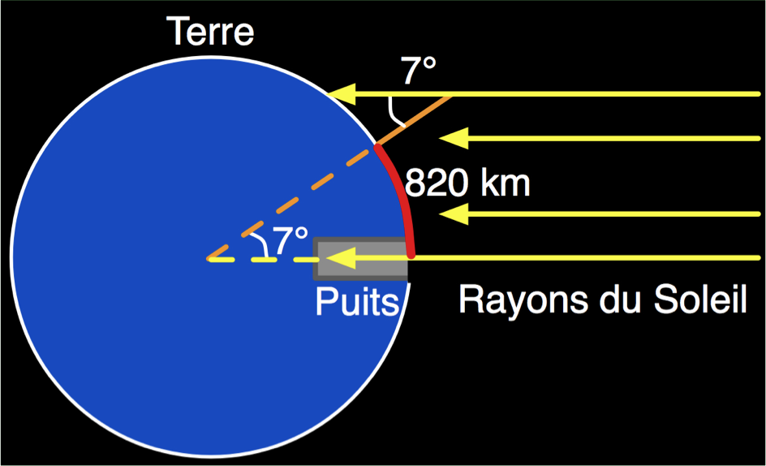

La profondeur du ciel
CEA Explorer et comprendre l'Univers
1 octobre 2014
Le Soleil est plus loin que la Lune
Méthode d'Aristarque


- \(\theta = 89.85°\)
- Le Soleil est 382 fois plus loin que la Lune
Le rayon de la Terre
Méthode d'Ératosthène

- Le rayon de la Terre est d'environ 6700 km
- Valeur moderne : 6380 km
Distance Terre-Lune
Méthode moderne

384 400 km
Distance Terre-Soleil
Méthode parallaxe
La distance entre la Terre et le Soleil est appelée une unité astronomique (UA)

- 1 UA = 1.50 \(\times\) 1011 m = 150 000 000 km
Distance des planètes inférieures
Méthode de l'élongation maximale
Distance des planètes supérieures
Méthode de Kepler